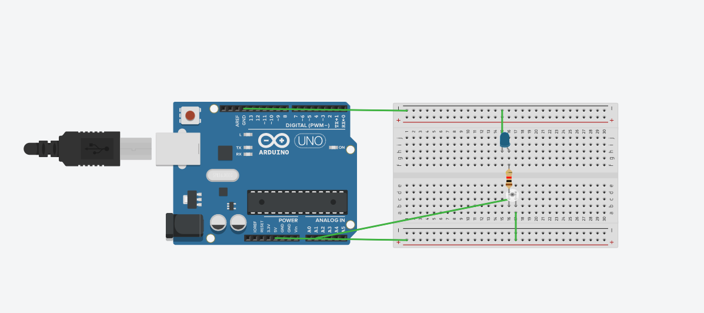
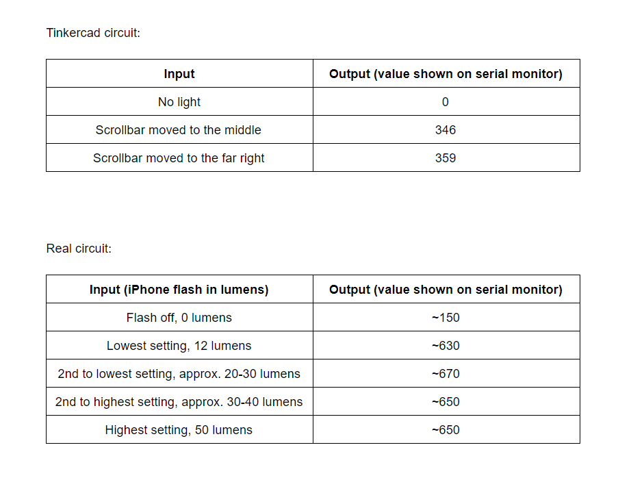

The first part of our assignment today was to use a sensor from the kit to measure a physical quantity with the Arduino. We needed to calibrate our sensor, which meant we had to describe the range between its minimum and maximum values and whether we could control it or not.
I wanted to follow Robert's tutorial, but I couldn't find a magnet in our house. So I decided to think and create another circuit with a phototransistor. I used a 1k ohm resistor and an LED light to physically show and demonstrate the effects of the sensor. I replicated it first on Tinkercad and it deemed functional to me. Here's the circuit and its code:
On the lowest setting, it read 0 on the serial monitor. When I set the lighting settings in the middle, it read 346. On the highest setting, it read 359.
I was excited to recreate this circuit in order to gather data properly by using my iPhone flash's lumens as the input. However, I faced a few problems with the phototransistor after recreating the circuit. The current and voltage couldn't seem to flow through it, and I'm still not sure why. When I used the voltmeter on my LED light, it read ~0.6. I assume this isn't enough power to light it up. The circuit didn't seem to work at all, but once I opened the serial monitor's tab, it showed me some values. It responded to my iPhone's flash, but there was something obviously wrong. Nonetheless, here's the table I made using the data I collected.
